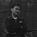
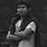
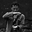

© 2014 Tim Ekspedisi Candi Indonesia

Kami adalah Tim Ekspedisi Candi Indonesia. Di bagian ini kami ingin mengenalkan tentang "Ekspedisi Candi" dan kami, Tim Ekspedisi Candi. Tapi sebelumnya kami mengucapkan selamat datang di halaman online kami. Halaman online ini memuat informasi tentang candi, peta, penunjuk arah, panorama, galeri foto dan video, hingga live cuaca di sekitar candi. Data dan/atau informasi yang tersedia di Halaman Online Tim Ekspedisi Candi Indonesia adalah hanya sebagai rujukan/referensi belaka. Dan seluruh layanan yang diberikan mengikuti aturan main yang berlaku dan ditetapkan oleh Tim Ekspedisi Candi Indonesia. Selebihnya baca halaman Persyaratan Layanan
Berawal dari penjelajahan secara virtual terhadap candi-candi di Yogyakarta dan sekitarnya, kami mengumpulkan data berupa peta dan petunjuk arah. Kami sadar, bahwa di Yogyakarta, khususnya Sleman, berlimpah peninggalan sejarah. Bahwa selain candi yang populer seperti Borobudur, Prambanan, dan Ratu Boko, terdapat candi-candi lain yang eksotis. Mulai dari candi-candi kecil yang letaknya di tangah sawah atau di tengah-tengah pemukiman penduduk, dari yang sudah dipugar maupun masih batu-batu yang berserakan, sampai candi yang letaknya di atas pegunungan. Informasi berharga ini kami susun agar bisa kami jelajahi satu-persatu. Kami memulai Ekspedisi Candi ini.
Tim Ekspedisi Candi
 |
 |  |  |  |
|---|
• Logo kami memiliki arti penjelajahan. Lihat → Logo Ekspedisi Candi
• Selengkapnya lihat → Peta Situs
Hubungi bagian informasi kami pada jam kerja.
Waktu Yogyakarta:
Sekretariat: Jl. Wahid Hasyim No.3, Gaten Condongcatur Depok Sleman Yogyakarta, Indonesia
Telp / SMS: +62 813 92541 831
Website: http://ekspedisi.github.io
Twitter: @ekspedisicandi
Pengalaman penjelajahan kami yang luar biasa ini kami dokumentasikan dalam media online ini agar dapat diakses siapapun. Sekaligus bermaksud menularkan ketertarikan pada sejarah. Atau jika kamu mencari destinasi wisata yang tidak mainstream, atau mencari sisi lain landscape Yogyakarta, memperkaya wawasan. atau apapun alasanmu, kamu sedang mengunjungi halaman online yang tepat. Sebagaimana kami sebutkan sebelumnya, web ini memiliki konten yang kaya. Bahkan beberapa candi belum kami kunjungi. Kami menjadikan media ini sebagai referensi kami untuk melakukan penjelajahan berikutnya. Web ini selangkah lebih cepat.
Halaman online ini memuat materi dari berbagai sumber di internet. Kami akan menyertakan sumber disetiap pemuatan artikel, gambar, video, kode pembuatan web seperti javascript, css3, dan sebagainya. Kami mengolah atau memodifikasi secukupnya seperti melakukan pemotongan sederhana pada gambar, termasuk pengeditan tulisan. Kami merangkai sumber yang berlimpah ini dan kemudian menyederhanakannya. Itu saja. Selebihnya kami bereksperimen menggunakan Google API dan penyedia layanan cuaca untuk melengkapi.
comments powered by Disqus
 EKSPEDISI CANDI | Page 1 of 15
EKSPEDISI CANDI | Page 1 of 15